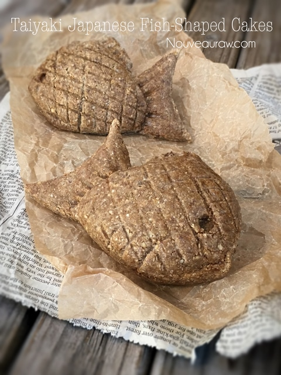
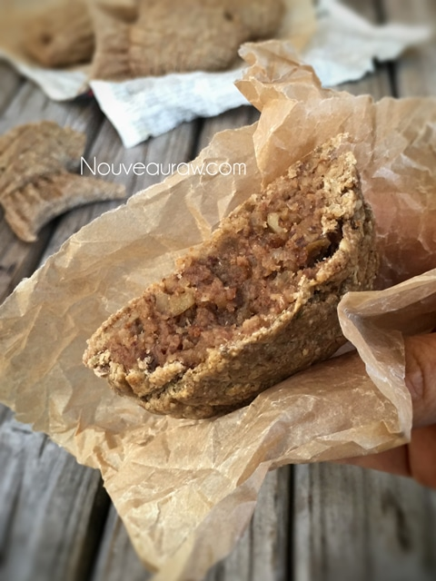

Taiyaki Japanese Fish-Shaped Cakes

~ raw, vegan, gluten-free ~
Taiyaki is a Japanese fish-shaped cake that is most commonly filled with red bean paste which is made from sweetened azuki beans. Other common fillings might be custard, chocolate, cheese, or sweet potato. Traditionally, it is made using regular pancake or waffle batter. The batter is poured into a fish-shaped mold for each side. The filling is then put on one side, and the mold is closed, and cooked on both sides until golden brown.
Breaking tradition…
I was contacted by a Nouveau Raw Member who wanted to know if I could create this dessert for her husband’s up and coming birthday. She had been inspired by my Moon Cakes and was hoping she could present something similar for her husband who is of Japanese descent. She wasn’t looking to use the traditional ingredients; she wanted it raw and healthy.
Nothing fishy going on here…
I have to tell you that these smell absolutely amazing coming out of the dehydrator! Warm apple pie nails it right on the head.
How many fish cakes does this recipe yield?
The apple pie filling made enough to create 16 molded fish cakes. I purchased this mold on Amazon. The crust batter however only makes enough for 8. You have a few options here; double the crust recipe if you want to make 16 fish cakes, or reduce the filling ingredients by half… or use the leftover filling to make a second treat such as cookies. Options, options, options. :)
Filling yields 2 cups (2 Tbsp worth per fish) makes 16 fishes
- 1 cup chopped pecans, soaked & dehydrated
- 1 tsp ground Ceylon cinnamon
- One tsp Apple Spice
- 1/4 tsp Himalayan pink salt
- 1/2 cup apple sauce
- 1/2 cup packed, Medjool dates
- 1 Tbsp maple syrup (or another sweetener)
- 1 1/2 cups raw walnuts, soaked & dehydrated
Outer crust: yields eight fish
- 2 cups buckwheat groats, soaked
- 1 cup cashew, soaked 2 hours
- 1/4 cup flaxseed, ground
- 2 Tbsp maple syrup
- 2 Tbsp cold-pressed coconut oil
- 1 Tbsp ground Ceylon cinnamon
- 1/4 tsp Himalayan pink salt
Preparation:
Filling:
- In the food processor, fitted with the “S” blade, combine the pecans, cinnamon, Apple spice, and salt. Pulse to a fine crumble.
- Add the applesauce, dates, and sweeter. Process until the batter comes together.
- If the dates are really dry, rehydrate them in enough water to cover for about 15 minutes. Drain and discard the soak water before adding it to the batter.
- Add the walnuts and pulse together leaving chunks. This will add texture to the overall dessert. I tried it with a well-blended filling and the combination of the outer and inner layer was too similar and was boring to the mouth-feel of things.
Outer Crust:
- Click on the link above to learn how to soak buckwheat. After soaking the buckwheat, drain and discard the soak water, rinsing them under running water until you don’t detect any more mucilage (slime) draining from it. This important as it will affect the taste.
- You can take the buckwheat to the next nutritional level by sprouting it before continuing with the recipe. This will take an extra day or two.
- Place the flax seeds in a small grinder to bring to a powder.
- In a food processor, fitted with an “S” blade, combine the groats, cashews, flax, maple syrup, coconut oil, cinnamon, and salt. Process until the batter is well mixed.
- Form a dough ball and put it in between two large sheets of plastic wrap. If it feels too sticky to handle, let it rest for at least 15 minutes.

Assembly:
- Prepare the fish mold by lining it with plastic wrap. This will help with removal. I tried without, and boy was it a mess. :P
- Roll the dough thinly, between 1/8″ – 1/4″ thick. Trim the dough to be a little larger than the fish pan/mold that you are using. See photo below on the 5 1/2″ x 6″ template I made to accommodate the mold that I used.
- If the dough is too thick, the end product will taste doughy.
- If the dough is too thin, it won’t hold up to the process.
- I used roughly 1/2 cup of dough for each side of the fish mold.
- Lay the rolled out dough on the pan and gently (!) press in the center of the fish cavity where the dough will sit. Do this to both sides of the fish mold.
- If the dough cracks too much, you need to add a little bit of water to the batter. Start with 1 Tbsp and work up if need.
- If the dough feels too wet, add a Tbsp of ground flax, mix and let it rest for about 15 minutes.
- Place 1 Tbsp worth of filling into each side of the mold and gently move it around to fit into the cavity.
- Now we are ready to close the mold to press it together. On the side that you are going to fold over, hold onto the plastic with your fingers carefully holding the dough/filling in its place.
- Close the mold and press the sides together.
- Open the mold and remove the plastic wrap on one side. Trim away excess dough.
- Remove the fish from the mold using a light hand, so you don’t disturb the markings from the mold pattern.
- Smooth the edges to seal the dough.
- I wanted the mold markings to be more striking, so I used a chopstick, and a thin piece of string to make the gills. Repeat the process until all the fish are made. Place them on a mesh sheet that comes with the dehydrator.
- To create a cooked appearance, mix either1 Tbsp of powdered coconut crystals with 1 Tbsp of water in a small bowl … then paint it onto the crust with a brush.
- Dehydrate at 145 degrees (F) for 1 hour, then reduce to 115 degrees (F) for 2-4 hours.
- Serve warm or store in an airtight container in the fridge for 5-7 days.
Culinary Explanations:
- Why do I start the dehydrator at 145 degrees (F)? Click (here) to learn the reason behind this.
- When working with fresh ingredients, it is important to taste test as you build a recipe. Learn why (here).
- Don’t own a dehydrator? Learn how to use your oven (here). I do however truly believe that it is a worthwhile investment. Click (here) to learn what I use.
© AmieSue.com